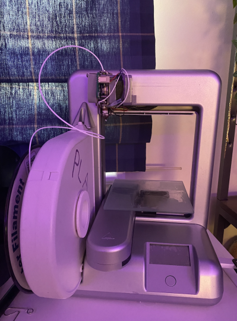

Hello! My name is Jaci and I am a 16yo rising Junior from Southern California! For the past 5 years I have scraped the surface of the engineering world through school courses and robotics. Currently, I am in the Engineering magnet program at my highschool, which basically just secures me a spot in all the STEM based electives that I could take. In addition to spending all my freetime tinkering in the campus workshop, I love to challenge myself academically and physically. I am happy to be an AP/Honors student, IB Diploma candidate, and competitive circus artist. I rarely give myself downtime, and this summer I took this course to see if engineering was the right path for me.
A few random things about me: I love Taylor Swift and music, CAD, and am new to record collecting :)
For my entire time in high school, I have fortunately had some sort of board position. From drive team freshman year, to the leader of the mechanical subteam for my upoming junior year- I have grown as an engineer. FIRST Robotics as a whole has developed my understanding of the design process and exposed me to using power tools and CAD software.
August 2019 - Present
VEX Robotics
VEX Robotics was the first engineering-type program I joined. At first I was asked to participate for my assets in sketching and notetaking, but progresssed my way to team president a year later. It opened the door for my engineering endevors, and I am forever grateful I decided to give it a shot.
I have been training aerial arts for almost 5 years now and love it. Before, I had danced for around 8 years, did gymnastics, cheer- the whole bundle; but none of it really stuck. I am new to competing in the sport and look forward to the new people and experiences I will have.
This first assignment really had me tap into the back of my brain and retrieve my programming knowlege. Our instruction was to create a website that contained a page with a proposal for the final project. I actually really am looking forward to the creative aspect of setting up my webpage just because it has been something I have wanted to do.
22 June 2021
Documentation
I based my website off of two different Bootstrap templates that had caught my eye. After downloading the files I picked and chose what aspects of each template I liked most and started to troubleshoot and personalize the code using Sublime Text Editor. I was satisfied with the overall backbone of the page and I was really excited to get to the customization. I changed the profile photo and background colors- even down to changing the hyperlinks and fonts. It took a lot of time betwewen troubleshooting with google and making sure everything ran smoothly.
Roughly following the instructions on the website, I modeled the "First Object", made an assembly, and set up a model for 2D printing (laser cutting). I had not used the mirror/pattern SOLIDWORKS feature in forever so it took a little bit to figure out the confinements I had to use. Theoretically the linear pattern function that I used is the same as the array feature in Fusion 360, duplicating a sketch. After I created my pattern and surface I wanted to cut out of, I just selected the bodies I wanted to keep solid.
Servo Motor
One of the objects I modeled for this weeks assignment was a microservo from our kit of parts. I used calipers to get the measurements (mm) from the object and put it into SOLIDWORKS. I modeled both the servo base and one of the different servo attachments from the kit as well. Then created an assembly of the part together. I also plan to use these servos from the kit of parts for my final project.
Jewlery Holder
The second object I modeled for this weeks assignment was my jewelry holder. It holds both my necklaces and bracelets that I wear fairly often. I thought the shape of the object would be good practice to CAD; specifically because it would involve me creating 2 of my own reference planes.
At the end of class on 6/29/21, we the basics of Arduino and practiced compiling and uploading our first code sketch. This was the "Blink LED" example code shown in the video below.
After wiring a simple LED circuit, I wanted to take it a step further and add a push button. Without any code, when the button is pressed the LED will light up, and turn off when the button is released. I used the "button" pre-programmed Arduino examaple and tweaked it a bit to just tell it to turn on when pressed, and turn off if pressed again.
Potentiometer
I have worked a decent amount with potentiometers between my Mechatronics class and through robotics- but have never seen one like this. I thought it was cool and had to play around with it. No code involved, just working with the reistance. From my multimeter, the reistance ranged from 0 (LED at its brightest) and around 10k ohms (basically no light).
Voltage, Power, and Resistance
For resistence I played around with parallel resistor circuits, where instead of linking 2 resistors to inscrease the resistance- you line them up next to eachother to decrease it. I use a 1m ohm resistor and a 470 ohm resistor for the purpose of a dratic difference. When both resistors are used, the LED shines brigtly (so bright that it messsed up my phone's focus). When I removed the 470 resistor (video below) the light dims a lot, because now its limited by the 1m ohms. The TinkerCAD simulation below my circuit photos helps give a more clear view of the wiring.
To calcuate the overal REQ (resistence) of the circuit, I used the formula (1/REQ = 1/R1 + 1/R2 •••). 1/REQ = 1/470 + 1/1m ~~ 469.78 ohms
For this weeks assignment I turned most of my attention to my final project, and less on building more simple circuits. Below, I have some examples of a circuit I played around with.
My main goal with this was to tinker with how much power these needed to run smoothly. I played around with the motors we used at the end of class, connecting one to 5V and one to 3.3V to see the differnce in the distance they spun. As expected, the one with less power spun for less duration. The smoothness of the spinning was not that effected, probably because there was nothing connected to the shaft.
5 July 2021
Final Project Prototyping
For my plane, the speed at which the wings tilt (using servos) is less important than if they rotate smoothly. Doing some tests with the microservos and a prototype wing, the weight caused the servo to struggle. There were a lot of things that I did not take into consideration because I just wanted to get an idea of how the body of the plane would be set up. The position of the servo on the end of the wing could help a lot with the distribute of weight. The wing was made out of some foam board (linked in the FINAL section of my website) which was a decent amount heavier than the insulation foam I will start to be using.
Working with for loops, I created a circuit that when the button is presssed, the LED will slowly dim anad then reach full power. The LED will stay at full power until the board is reset which is shown in the video.
8 July 2021
CAD models and sketches
This week I started to CAD a base for my final project plane. This would later be made out of a thin light wood, maybe balsa, but for now I just wanted to get an idea of what it would look like. I started with some circles to get the rounded parts of the shape, then connected them with tangent lines to form the object. After extruding it, I made another sketch that would cut out a divit for the servo attachment. That way the attachment would sit in the part and be more stable, rather than it being glued on top.
 This week we talked more about 3D printers, and luckily I have my own. It's nothing new, but it was given to me for free by my high school since they were upgrading to Ender 3 Pros. The old printers were given to Robotics Board members, since they had the skills to fix them up and use them for the team. I got the pritner out from my closet and it took a few hours to fix up. It is a "Cube" brand printer from 10ish years ago, so there's not much I can do with it. There are limited things I can do- level the bed, resize the files; but nothing like nozzle tempature or print speed. It is hard to troubleshoot when a print fails or cannot print smoothly so that lengthens the time it takes to make a final product. I somewhat enjoy the challange. Amazon link to printer Printer Review Article
12 July 2021
CAD Models and Sketches (continued)
After fixing up the printer I decided to print a couple things before I started to print the attachment for my plane wing. One of which was this keychain I found the file for on Thingiverse for my friend. I just used some jumprings I had in a craft kit for when I liked making braclets a couple years ago.
After printing out the wing base, I noticed some issues with the sizing of the divit for the attachment. I made note of it and just sanded down the area to fit. Because it is just a prototype, I hot glued the wing base to the servo attachment- that way it could be cleaned off to be used in my final project.
My inspiriation for this comes from my facination with robots and small moving vehicles. As well, one of my friends has been doing his own experiments and designs of a similar prototype- and I wanted to put my spin on it.